About the Author
Susan Schmidt’s poems appear in Literary Trails of Eastern North Carolina and won the 2012 Guy Owen Poetry Prize. As developmental editor, she polishes science and history books, novels, and memoirs. She has been a professor of literature and environmental decision-making, sailboat captain, and government science-policy analyst. Susan has a doctorate in American Literature; Masters degrees in Environmental Sciences and British Lit; and post-doctoral study in conflict resolution and bioethics. She studied at Oxford, and taught in West Germany. She taught English and Environmental Studies at the University of Virginia, NC State, Duke, Brevard, Warren Wilson, College of Charleston, NC School of Science and Math, Andover, and Collegiate in Richmond.
To witness natural diversity, Susan walked the Camino de Santiago, Cornwall Coastal Path, Scotland Highlands, Ring of Kerry, Appalachian Trail; surveyed birds in Kenya and Ecuador; paddled Prince William Sound and Milford Sound; and delivered sailboats to the West Indies. Her homeplace is the Chesapeake Bay in Virginia, and her homeport is Beaufort, North Carolina, where she walks beaches with her Boykin Spaniel.
Creative Writing Trainer
Susan Schmidt leads technical or creative-writing workshops on site. She leads an ongoing Critique Group of writers working on books.
Lecturer
Susan Schmidt presents popular lectures on:
Scottish Highlands
| 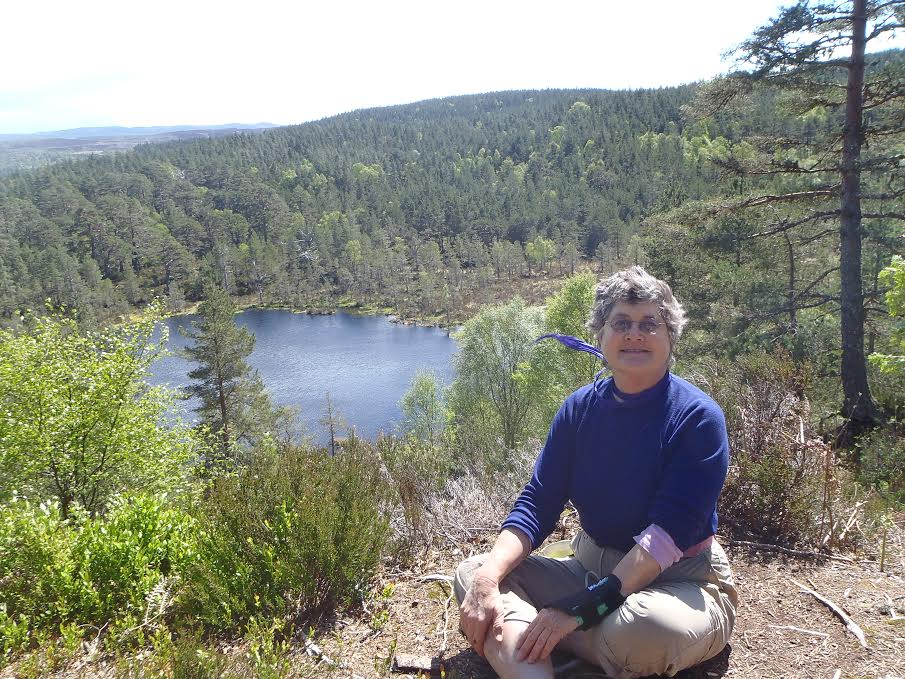 | 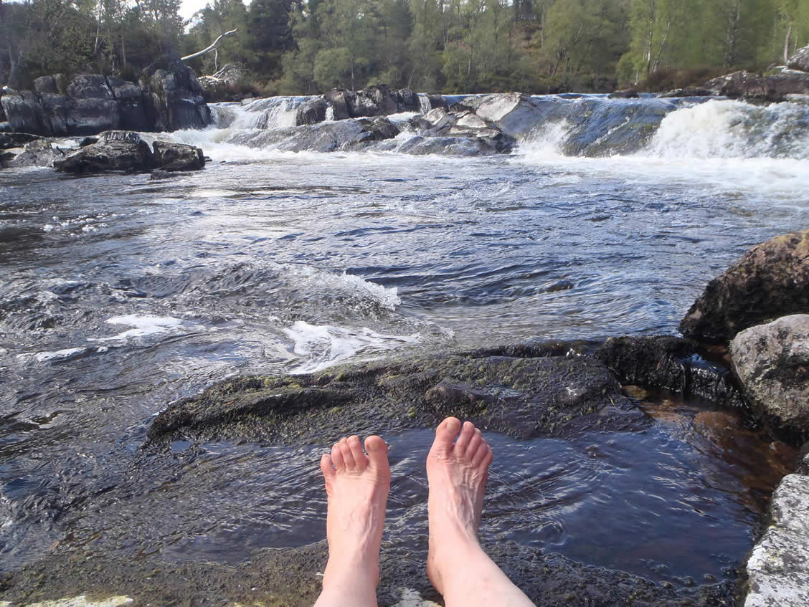 |
Kenya Birdsurveying and Wildlife-Conservation Work
| 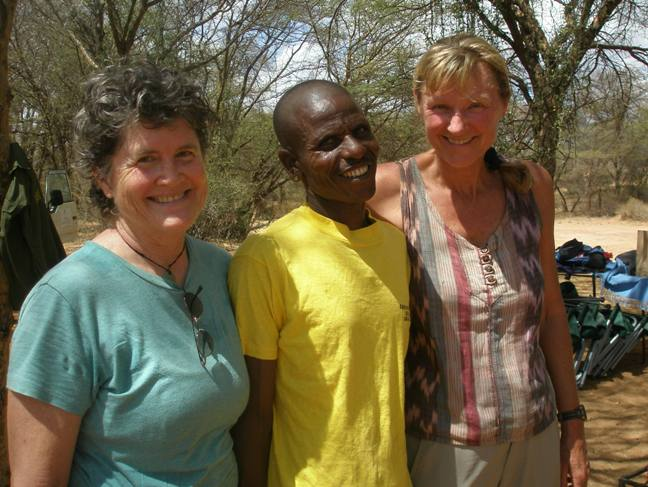 | 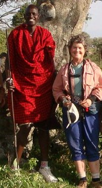 | 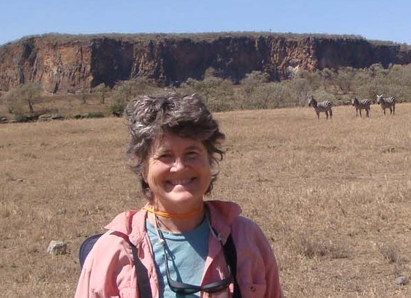 |
){kind=link}
){kind=link}
){kind=link}
Pilgrimage and the Camino de Santiago
| 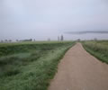 | 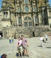 |
){kind=link}
){kind=link}
New Zealand Trekking and Natural History
| 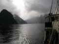 | 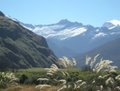 | 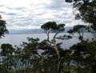 | 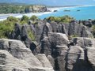 |
| 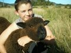 | 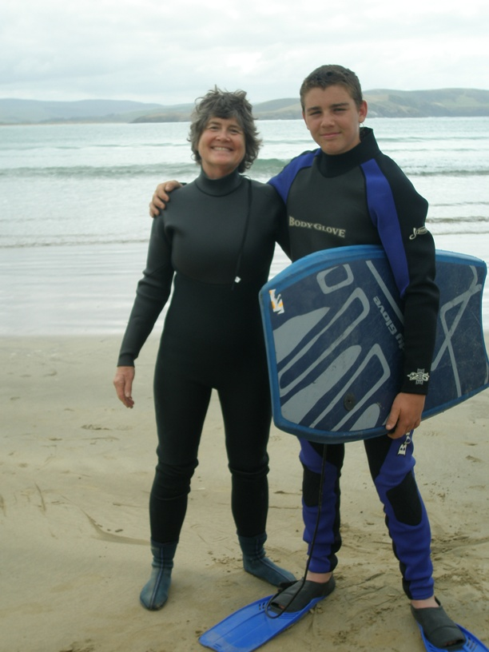 |
){kind=link}
){kind=link}
){kind=link}
){kind=link}
){kind=link}
){kind=link}
){kind=link}
| © 2012 Susan Schmidt. All Rights Reserved. |
Find Current Book Reading Schedule
 |
 |